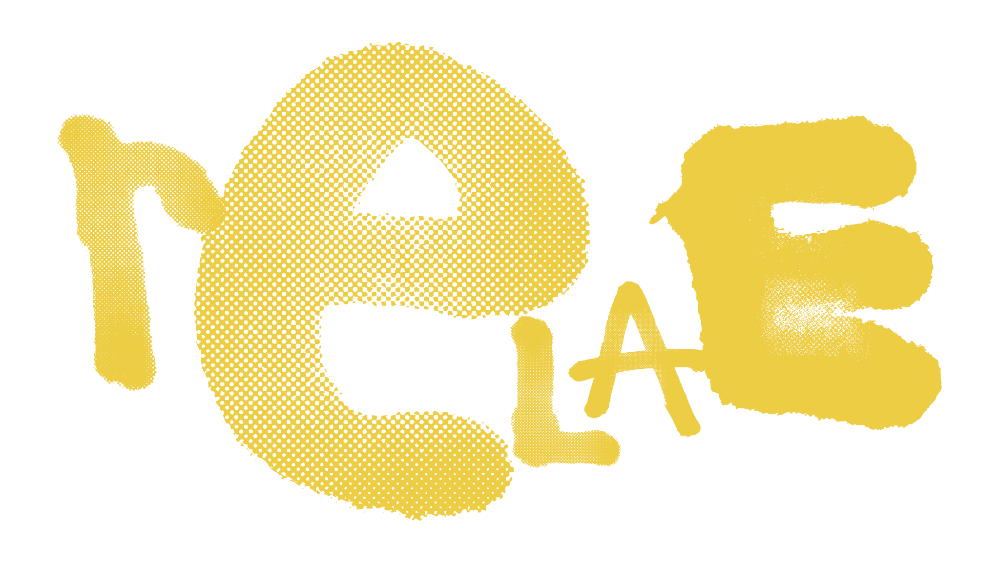
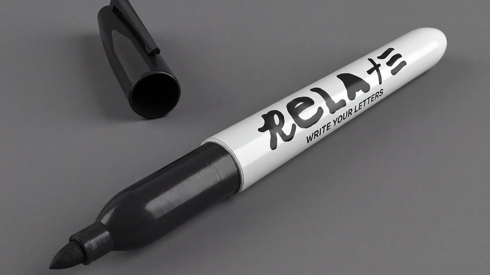
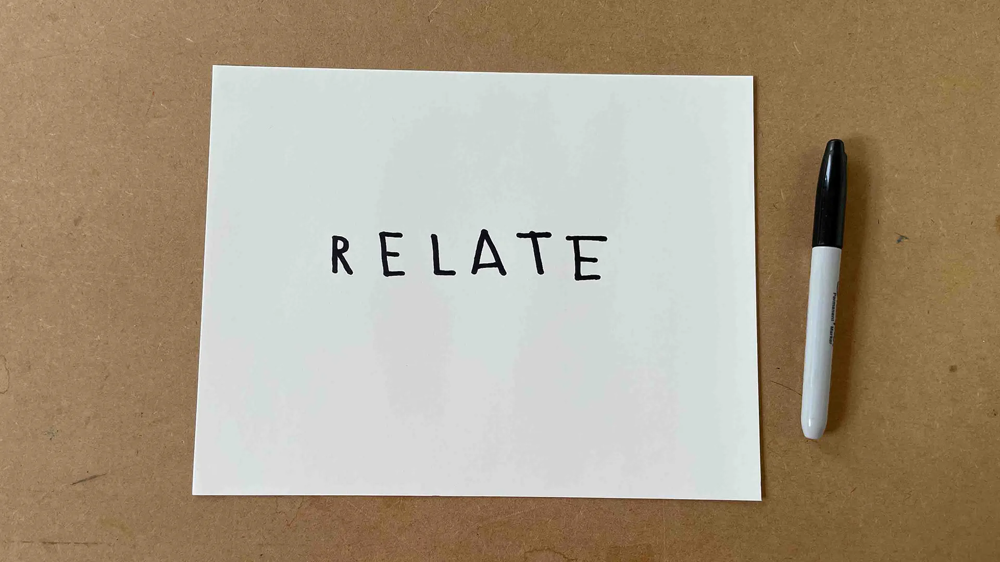
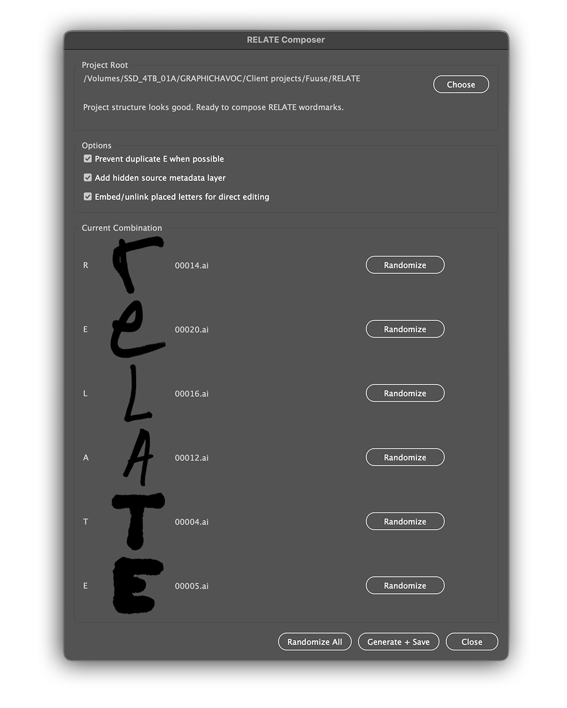
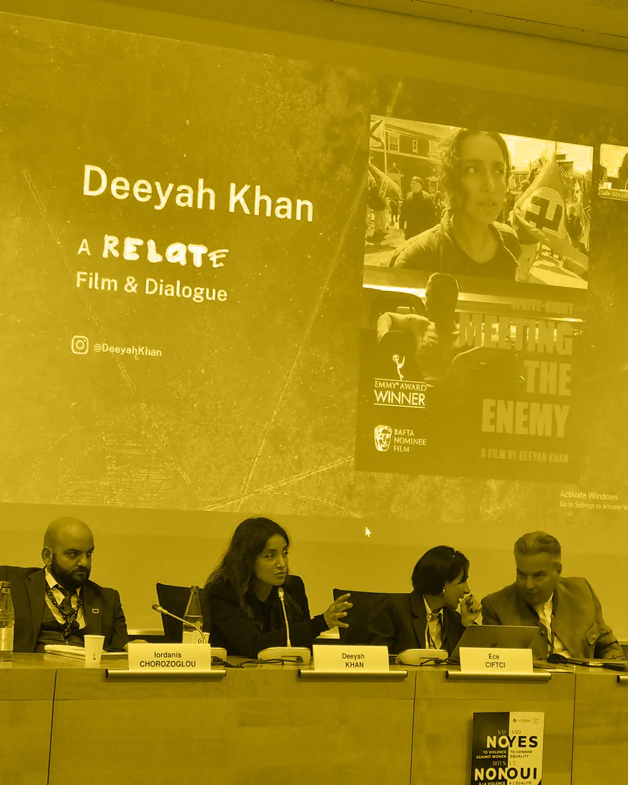
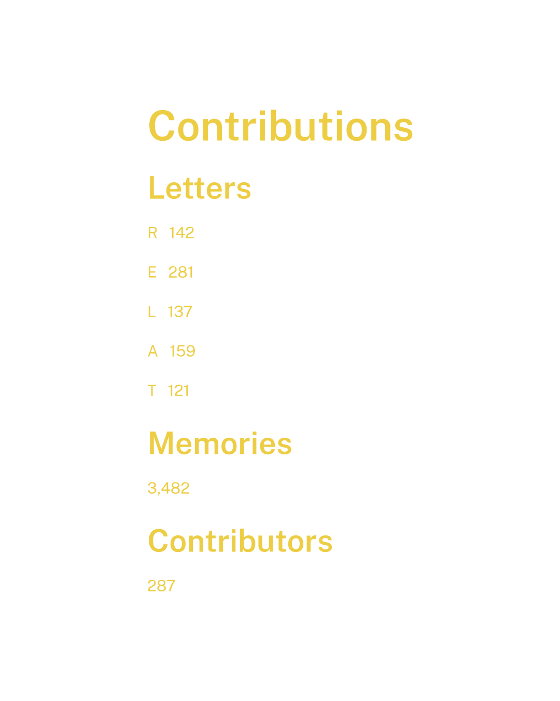
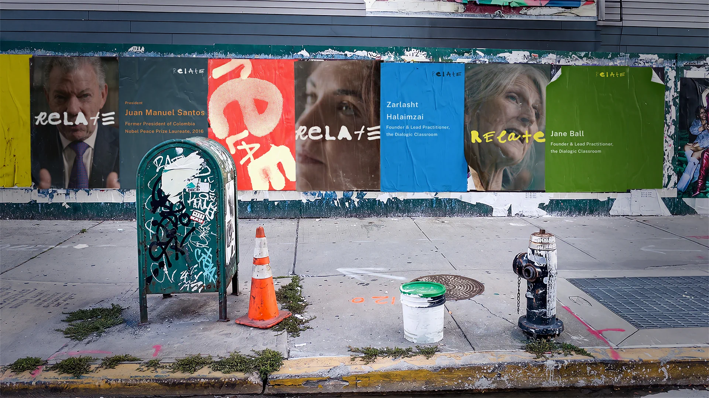

Case
Study: RELATE
RELATE is a new initiative created by internationally recognized, award-winning documentary filmmaker Deeyah Khan and produced by Fuuse. GRAPHIC HAVOC, a longtime collaborator with Khan and Fuuse whose previous work together includes Emmy-, Peabody-, and BAFTA-awarded documentary projects, was engaged to develop the RELATE identity system and its first motion and film applications.
Working from Khan’s mission and under her direction, GRAPHIC HAVOC developed the central identity concept: a living system built around participation, collective authorship, and continuous evolution.
An Identity People Can Enter
RELATE is built around the capacity to see, listen to, and remain in relationship with other people across difference. The identity needed to do more than represent those ideas visually. It had to give people a way to be part of the dialogue.
Handwriting made participation personal. Each person writes the six letters R, E, L, A, T, and E separately, allowing individual marks to be collected in the Letter Library and recombined with letters written by other people.
The handwriting is not standardized. Each mark retains the character of the person who made it while gaining new meaning through its relationship to other contributions. What begins as individual expression becomes a shared word.

Different Hands, One Recognizable Word
Every resolved RELATE wordmark is a Collected Memory. Each one brings together letters from different hands, creating a dialogue between individual contributions without erasing their differences.
The recombinations are intentionally unpredictable, but the finished wordmarks are not arbitrary. Each Collected Memory is carefully resolved so that the identity remains legible, balanced, and recognizably RELATE.
All Collected Memories can coexist across the identity. Recognition comes from the shared word and the underlying system rather than repetition of a single fixed mark. The result is stable in recognition, evolving in expression, and collective in authorship.



Making a Living Identity Practical
The first Collected Memories were assembled manually. As the Letter Library began to grow, the same question that made the concept compelling also created a practical production challenge: how could new wordmarks continue to be made efficiently as more contributions entered the system?
GRAPHIC HAVOC began by exploring a simple Adobe Illustrator automation and developed that idea into RELATE Composer, a custom production tool conceived, designed, and developed specifically for the identity.
Composer automates the repetitive work of randomly selecting and assembling letters while preserving the optical judgment required to resolve every finished wordmark. The Composer doesn’t generate the identity. It helps assemble it.
That distinction keeps the process scalable without removing the human decisions that give each Collected Memory its final form.
A Library of Individual Voices
Film and story are central to how RELATE works, so the first applications of the identity were designed for motion and documentary content. Initial films include internationally recognized voices such as former Colombian President and Nobel Peace Prize Laureate Juan Manuel Santos, Grammy-nominated artist Anoushka Shankar, and Nobel Peace Prize Laureate Tawakkol Karman, with support from UNESCO and other partners including the Nobel Peace Center.
From early in the project, individual films and endeavors were considered almost like separate books within a larger library. Each receives its own fixed three-color palette, while different Collected Memories can appear throughout the same project. Color provides project-level continuity without fixing RELATE to one visual expression.
The palette library is designed to keep expanding. Every palette contains Whisper White and two variable colors, creating a consistent structural rule while allowing individual films, subjects, and future endeavors to occupy distinct visual territory.
Public Sans supports the same idea from another direction. It was selected because it allows RELATE’s handwritten voices to remain the strongest voice in the room. Calm, legible, and deliberately understated, the typeface supports the people and stories without competing for attention.
The current motion language follows the same principle. Typography, color, layout, transitions, and completed Collected Memories frame the documentary material while allowing the person on screen to remain primary. As the motion system develops, the living behavior of the identity will extend further into the animation of the letterforms themselves.


Participation Becomes Evidence
Write Your Letters extends the identity beyond communication and into direct participation. Designed for use anywhere RELATE engages people, the approved system invites participants to contribute their own handwritten R, E, L, A, T, and E to the Letter Library. Physical participation materials have been designed for future production and rollout once funding allows.
Because contributions can be recorded as they enter the system, participation can also create a Living Record. Over time, the identity can track the growth of the Letter Library, the number of Collected Memories created, and the people or communities that have contributed.
These are more than production statistics. The record can become useful evidence for project reports, grant applications, funder communications, presentations, exhibitions, and other situations where RELATE needs to demonstrate meaningful participation.
Rather than simply telling the story of participation, the identity itself becomes part of the evidence.

Recognition Without Repetition
The identity is beginning to roll out publicly across the RELATE Library YouTube channel, documentary films, titles, end cards, thumbnails, and social communications. Different Collected Memories can appear within the same project while a fixed palette gives each film or endeavor its own recognizable character.
The same principles can move from a small screen to a wall without requiring the identity to become more uniform. Multiple people, subjects, colors, and wordmarks can appear together while the shared system keeps the communication recognizably RELATE.
That flexibility gives the identity room to support an expanding library of films, conversations, programs, events, and future contributions without reducing every expression to the same visual formula.
The resulting identity does more than represent RELATE. It gives people a way to become part of it. Individual contributions can enter a system that supports different voices, films, projects, and contexts without losing recognition, while the same structure creates practical tools for production, participation, communication, and future organizational needs. As RELATE grows, the identity is designed to remember who helped shape it and to grow with them.